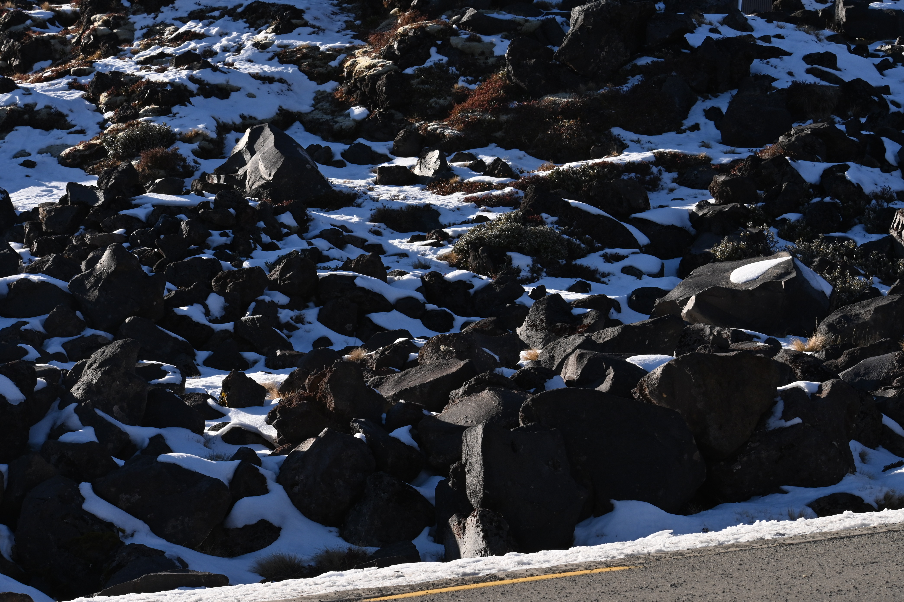

Week 01
Identifying skills, interests, and demo ideas
Exploring personal skills and interests while testing different directions to identify a suitable design focus.
By Johnny Zhou

I feel that design is closely related to the surrounding environment, and my designs are often inspired by the beauty of nature. As a designer, I love to capture the beauty of nature and blend it into my creativity.
This blog documents my weekly process, including experimentation, reflection, and the development of an Eco Hub concept grounded in real-world context.
This website documents my weekly design process, experiments, and reflections as I explore how spatial interventions can support environmental engagement and sustainable futures.
Explore how each weekly blog connects to climate resilience, ecological systems, and sustainable design thinking through spatial interventions.
Investigate how local business environments, communities, and New Zealand’s ecological context influence design decisions and project direction.
Document experiments, sketches, prototypes, and the tools used (such as Blender) to explore ideas, test spatial interventions, and refine the project through feedback.
Click each card to read a separate weekly blog page.
Exploring personal skills and interests while testing different directions to identify a suitable design focus.
Developing initial ideas and planning the demo while experimenting with early prototyping approaches.
Presenting a tech demo and reflecting on personal positioning through feedback and peer presentations.
Exploring the Business brief and developing the Eco Hub concept through initial sketches and spatial experimentation.
Developing early prototypes and refining the project focus while preparing for the first critique session.
Reflecting on critique feedback and redefining the project direction through a more focused second experiment.
A curated collection of case studies, tools, and research materials that shape the development of my Eco Hub concept and design decisions.
This section documents key references, tools (such as Blender),
and research materials that support my experiments, prototypes, and design iterations.